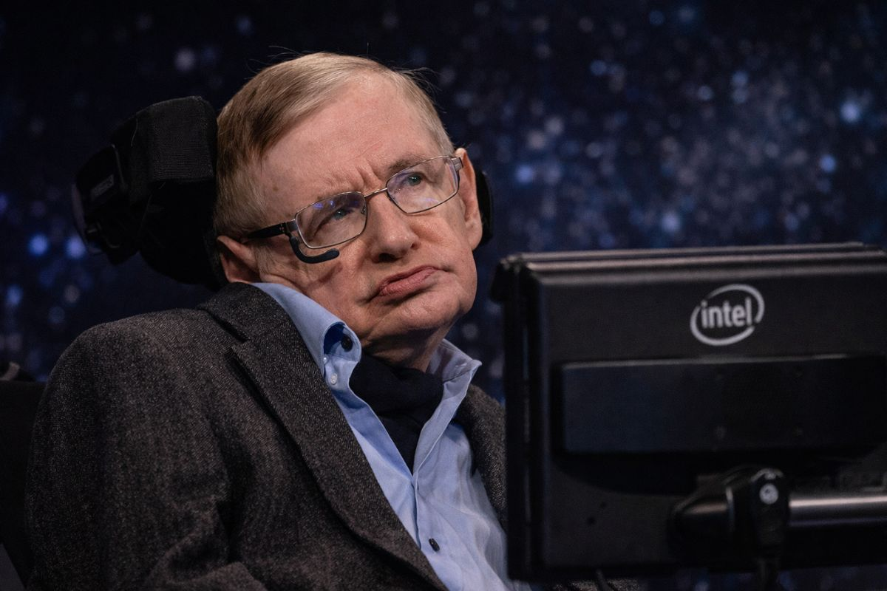
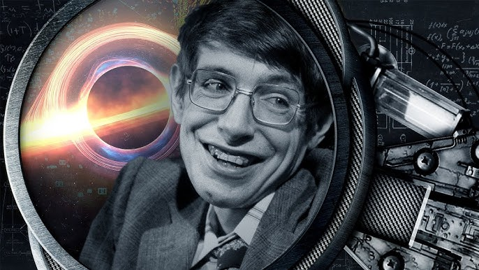

Stephen Hawking (1942–2018) foi um físico teórico e cosmólogo britânico, amplamente considerado uma das mentes mais brilhantes da história moderna. Ele dedicou sua vida a decifrar as leis que governam o universo, especialmente no que diz respeito aos buracos negros e à origem de tudo.🤓🤓

Radiação Hawking:Sua descoberta mais famosa propõe que os buracos negros não são totalmente "negros" nem eternos. Ele demonstrou que, devido a efeitos quânticos, eles emitem radiação, perdem massa e podem eventualmente "evaporar" e desaparecer.
Singularidades e o Big Bang: Trabalhando com Roger Penrose, Hawking provou que, de acordo com a Teoria da Relatividade Geral de Albert Einstein, o universo deve ter começado em uma singularidade — um ponto de densidade infinita — confirmando matematicamente a teoria do Big Bang.
A "Teoria de Tudo": Ele buscou unificar a Relatividade Geral (que explica o macro, como estrelas e galáxias) com a Mecânica Quântica (que explica o micro, como átomos), algo que permanece como um dos maiores desafios da física.
Aos 21 anos, Hawking foi diagnosticado com Esclerose Lateral Amiotrófica (ELA), uma doença neuromuscular degenerativa.
Superação: Embora os médicos tenham lhe dado apenas dois anos de vida na época, ele viveu por mais 55 anos, falecendo aos 76.
Comunicação: Com o tempo, ele perdeu a fala e a mobilidade, passando a usar uma cadeira de rodas motorizada e um sintetizador de voz icônico, controlado por movimentos mínimos do rosto ou dos olhos.
Olhe para as estrelas e não para os seus pés. Tente dar sentido ao que vê e questione o que faz o universo existir. Seja curioso.
T = hc3/8πGMkb
S = kAc3/4hG